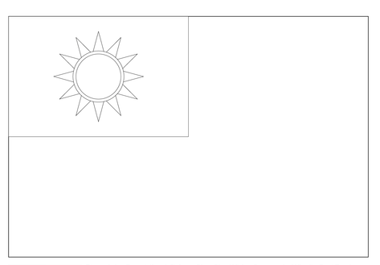

繪圖範例 <<
Previous Next >> C_lib
w14
延續 https://mde.tw/cpnote/content/w10-w11 中的項目執行內容.
項目1: 如何快速設定電腦輔助設計室中的網路 - 採 IPv6 網路設定.
在電腦輔助設計室, 若使用 Windows 11 電腦, 可以利用隨身碟中的 w11_1a.7z (第十一週 1a 上課時建立的共用網路設定檔案), 將各自的固定 IPv6 位址放入 .ps1 檔案後, 使用滑鼠右鍵移到 .bat 批次檔案圖像上, 並以管理者身分執行.
若是使用手機或筆電在其他網路環境, 或使用名稱為 NFU 的無線網路 (AP 無預設密碼, 連線後在瀏覽器中的表單, 以學號及校務系統密碼登入連線), 則可自行手動設定網路, 惟需注意若筆電曾使用上列 .bat, .reg 與 .ps1 程式方法設定, 該電腦輔助設計室中只啟動 IPv6 且使用系上代理主機的設定, 可能無法從操作系統的網路設定圖形介面中進行修改, 必須循 .reg 設定檔案中的登錄檔路徑執行修改.
項目2: 請分別利用 Replit、s.cycu.org 或 localhost 維護個人與分組的網站內容, 並比較不同方法開發計算計程式的優缺點.
Replit 至今的免費帳號仍可用來維護個人與分組網站內容, 也能用來開發 C + gd + gnuplot 等程式.
s.cycu.org 中必須善用 ps -axo pid,comm,uname | grep "python3" 查詢個人所啟動的網頁編輯 process id, 並了解各用戶可以利用 kill pid 刪除 process, 且可利用 python3 server.py& 再次啟用網頁編輯服務.
Replit: 改版之前必須先至 Shell 執行 git pull, 若有動態網站檔案 (即 config/content.htm) 中的衝突, 可在編輯網站利用 EditA (Edit All 頁面) 決定衝突區域的內容.
s.cycu.org 與 localhost: 改版之前必須先至倉儲目錄執行 git pull, 若有動態網站檔案 (即 config/content.htm) 中的衝突, 可在編輯網站利用 EditA (Edit All 頁面) 決定衝突區域的內容.
項目3: 程式練習:
w8 之前所指令的程式 C 練習作業:
上課內容中的 Exercises
w2-w5 週任務中的 Exercises
w6-w7 週任務中的練習一與練習二
請利用 C 結合 gd 繪圖程式庫, 畫出 PROC(規格), United Kingdom(規格), Japan(規格)與 South Korea(規格) Flags.
參考:
ROC flag in Brython, PROC flag in Brython, USA flag in Brython.
graphics library examples: 1, 2, 3, 4.
各分組成員協同將 jsliu_c_programming.pdf (需要下載密碼) 內容整理後, 放入各分組網站.
上述以 C 語言編寫的程式, 假如採用 Javascript 或 Python 語言編寫, 對於機械與機電整合設計工程師, 分別有那些不同的應用範圍?
w9 程式練習:
2b w8 作業: 請根據 cad2023_2b_w8.txt 檔案中的內容, 透過程式的讀取與篩選, 按照時間先後, 列出 2b 修課學員中已經登入 s1511.cycu.org 的學號. (修課學員名單 2a: 0838, 2b: 0851)
假如在近端處理, 必須同時儲存兩個檔案後, 進行資料選取:
get_stud_num_from_last_data.py (若採 Brython 編寫, 可以直接列出結果, 依照登入時間先後排序, 其中 41123227 為管理者最早測試時登入, 若採用 ANSI 編寫: c_parse_last_cp2023.7z)
從 hellogd.c 變化出下列各國國旗: 過程請參考簡報.
(如何求平面上兩線交點?)
ROC flag in Brython (將 Brython 程式儲存至個人 Gist 後, 從 Brython 頁面中直接呼叫執行)
USA 國旗
USA flag in Brython
PROC 國旗
PROC flag in Brython
UK 國旗
Japan 國旗
S Korean 國旗
貪食蛇 in Brython
Html5 canvas ebook
利用 ChatGPT 對話所完成的 2a 座位排序程式: w13_2a_seat.py 執行結果 (對話與程式編寫過程請參考這裡)
利用 "sudo update-rc.d stunnel4 defaults" 將 s.cycu.org 中的 stunnel4 設為與系統同步啟動.
繪圖範例 <<
Previous Next >> C_lib